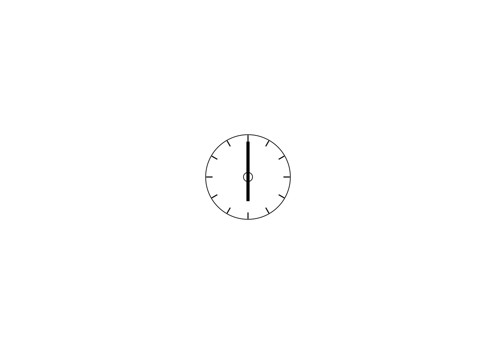
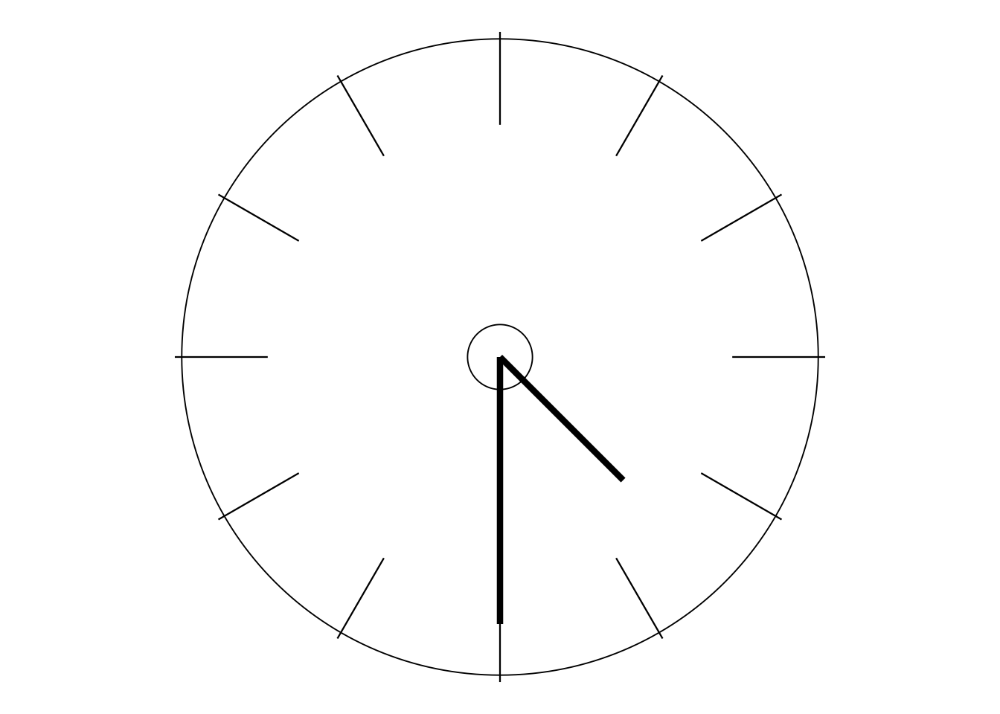
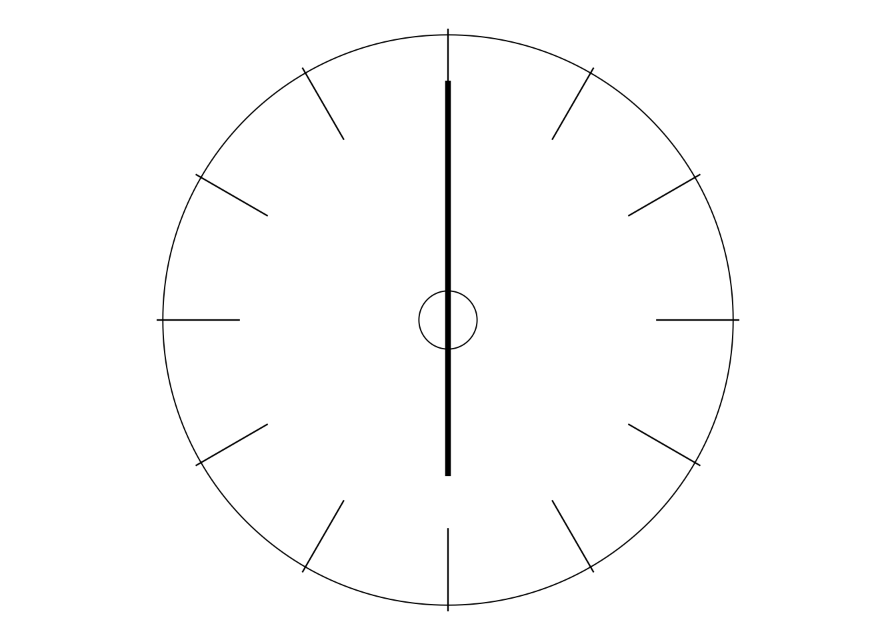
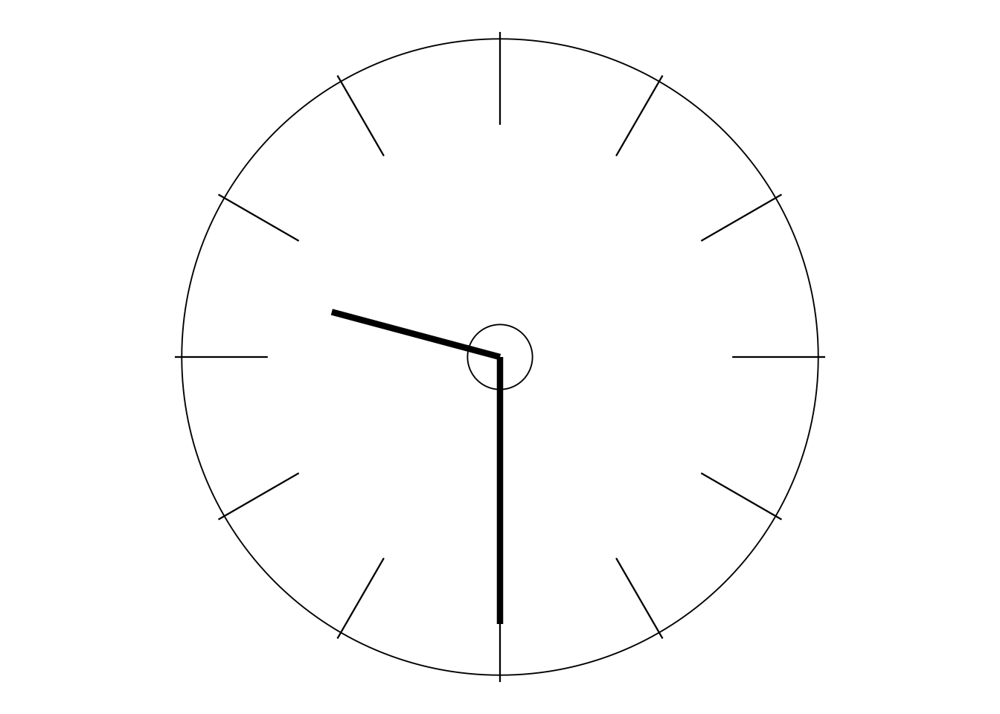

12 Days to Deming
An active-learning course
Please start here
Preface
I began drafting some distance-learning material based on Dr Deming’s invaluable teaching as long ago as 1999. But various events, combined with lack of time, interrupted that work and, when I retired at the end of 2004, it had remained untouched for almost five years.
These past few years have been very different. With the encouragement of my old friend Richard Capper, who some 25 years ago founded a superb little consultancy bravely named The Universal Improvement Company (UIC), I revisited those early jottings in 2012. Richard had always sent recruits to his staff to my public seminars, but these had, of course, now been unavailable for over seven years. So, when he contacted me in January 2012, Richard first tentatively explored whether I could come sufficiently out of retirement to present some in-house seminars for him and his people: but I knew I had grown far too rusty to attempt that! Instead, I offered to try to tie up some loose ends in the work that I’d left in 2000 and hand it over to him to use with his staff and clients as he saw fit. He enthusiastically accepted the offer.
However, soon after I got to work, I began to wonder how many others were in a similar position to Richard—keen to introduce their colleagues to Deming’s work but regrettably feeling they had no good means of doing so. Also, there must be many others who come across Deming, perhaps in some books that they are reading about management and quality, etc, or by finding some videos of him while browsing the internet. But, if they get interested, how can they really learn something substantial—in both breadth and depth—about what he taught? Just from reading a few books or watching a few videos? I don’t think so; I know that wouldn’t have worked with me. But, extremely fortunately, I had the relatively rare opportunity to attend and be involved with many of Dr Deming’s four-day seminars. And even then, to be honest with you, it was only at the third of those seminars that his teaching really began to take some shape in my mind. Before then I had remained pretty puzzled and confused—it was so different.
Incidentally, that’s as good a reason as any about why I have laid out this course in the form of “12 Days” of learning. If it took 3 × 4 = 12 days of Dr Deming’s own teaching for his wisdom to begin to get through to me, how could I expect anyone else to need anything less?
A few months after that third four-day seminar, I began to develop my own teaching on Dr Deming’s work—tentatively at first to my students at the University of Nottingham and then, before long, offering some short introductory public seminars. Subsequently, during the nearly 20 years before I retired, I was privileged to present many hundreds of seminars and courses—thus involving many thousands of delegates and students—that were solidly focused on Dr Deming’s teaching.
By the end of 2012, I had begun to feel confident that I could incorporate much more of the experience that I had thus gained over those years into what I had started back in 1999. But I also realised I would need a lot of help. I thus contacted a number of old friends and colleagues to let them know what I was up to and to ask if any of them might be interested in reading what I was drafting and hopefully giving me some feedback and guidance on how I could improve it. It was one of the best decisions in my life! The amount of constructive feedback, along with extremely useful information and the many contributions to the course that I have received during the subsequent years, has transformed those early jottings into some teaching and learning material that has been greeted with enthusiasm and excitement both by those who have been helping me and others who have seen the way the material has been developing during the past few years.
I would also like to thank those connected with the UIC who had not previously seen any of the material but bravely volunteered in 2017 to become my initial “guinea-pig” students to try working through the complete course. Also, regarding the UIC, my special gratitude goes to my main contact there since early 2016, Lucy O’Melia. Lucy aided the progress of the course in innumerable ways, including exploring matters of design and beginning the hefty task of seeking approvals for my use of materials from a host of other sources during the course. This task turned out to be extremely time-consuming and was then continued and successfully concluded by Luca Willington of the UK’s Deming Alliance. I am indebted to both these ladies for the considerable time and effort they have contributed to bringing 12 Days to Deming to this current state of development which I am now able to make available to everybody interested.
So it is my great pleasure to acknowledge those who have given freely of their time, several of them ever since 2013, to aid me in this project in so many and various ways. I’m certainly not going to try to tell you individually how every one of them has helped and contributed—otherwise this Preface would be at least twice as long as it is now. Here therefore, simply in alphabetical order, is a list of those who have been particularly involved, to all of whom I owe my deep and profound gratitude: Mitch Beedie, Richard Capper, the late Nigel Clements, the late John Dowd, Eric Lawson, Andrew Forrest, Malcolm Gall, Nick Gardener, Jackie Graham, Dave Higgs, Scott Hindle, Alan Hodges, Dave Kerr, Sarah Kerridge, Karl Laidman, Brian Leeming, Arvind Mathur, Tony Miller, Lucy O’Melia, Balaji Reddie, the late Peter Scholtes, Ray Tew, Richard Thorns, Lou Tribus, Fran and Don Wheeler, Fiona Wilkie, Colette Williams, Luca Willington, David Wormald, Peter Worthington and Dave Young. I fear I must still have omitted the names of others who should also be included in this list: please put it down to absent-mindedness due to advancing years.
There is another lady to whom I am also inordinately grateful: my better half, Tonie. During these past seven or eight years, she has, of course, put up with such considerable lack of time and attention from me that most certainly could not have been anticipated or wanted over so many years of what was supposed to be my retirement. But, despite that, she’s still here with me—bless her!
And finally, of course, to Dr W Edwards Deming. Without doubt, I was a slow learner. But the patience and respect which he showed toward me throughout those eight and a half years during which I was so fortunate to know him and learn from him is still, frankly, inexplicable to me. I treasure many memories of those happy times.
On one occasion that I met up with him while I was writing my book: The Deming Dimension, I asked him whether he minded my quoting him as extensively and explicitly as I was beginning to do. His answer was the greatest compliment that I could ever have imagined. He simply replied that I would always have his permission to use any of his material, written or spoken, in whatever way I wished. Well, I have made considerable use of his exact words in 12 Days to Deming, particularly in the Second Project which occupies the whole of Days 10 and 11—the climax of the learning in this course. I hope so much that the context in which I have used his words there and throughout the course justifies the extraordinary confidence and trust that he showed in me. In turn, it is my earnest hope that students who embark upon this course will grow to value and gain from that same wisdom as much as I shall always do.
Henry Neave, January 2020
Active learning
Why an “active-learning” course? You are probably more familiar with the term “distance-learning.” However, distance cannot improve learning, but activity certainly can.
There is, of course, activity in normal taught courses, be they provided at school, college, university, or any other type of educational institution. The activity may be homework, “prep,” essays, assignments, perhaps projects or even minor research. I think most would agree that, although the lessons, lectures, background reading, etc. are essential, the learning you gain from them often does not become particularly deep-seated in your mind until you work at those subsequent activities, using and applying that initial learning. “Doing something” with the initial learning helps it to become real.
Adding to your learning by reading a book about a topic with which you are already somewhat familiar is often absolutely fine: you already have the foundations upon which to build. But trying to learn something “from scratch” just by reading a book—however good the book is and whoever wrote it—quite often does not work as well. I have designed this course on the presumption that you will indeed be working from scratch, i.e., that you have literally “no previous knowledge” of anything specifically related to the subject matter. It is up to me to help you learn what I’d like you to know—not expect you to know it already!
In some areas, e.g., Mathematics, Engineering, and some Sciences, books may include questions and exercises at the end of each chapter, and they can help. But, as with homework, etc., such activity often takes place some time after the initial exposure to whatever is being studied, not during it—i.e., not as an integrated component of the learning process. It is when the activities do take place as a fully integral part of the learning process that I use the term “active learning.” And that’s quite different from weekly assignments or exercises at the end of a chapter: in active learning, the activities are carried out as and when they are most appropriate and helpful, not hours or days or even weeks or months later.
The amount and extent of such activities can be highly variable depending upon the context. For instance, when covering relatively gentle background material, hardly any such activity may be needed. At the other extreme, there can be situations where the learning is almost entirely activity-based. So there will be some occasions during this course when the activities are nearly continuous: you will be reading material maybe even just a sentence at a time and then immediately “doing something” as a result of that sentence. On other occasions, you will simply be reading for quite a while. As you’d expect, most of the time, you’ll be somewhere between those two extremes.
Time management
Days
It is because of this wide variety in the forms of learning that I have laid out this course in the form of 12 “days” rather than 12 chapters or 12 modules, etc. (I appreciate that it would be the rare student indeed for whom the “12 days” will be twelve consecutive days!) By a “day” I am envisaging a full working day of up to eight hours, though sometimes a little less. Of course, you individually or the group with whom you are working can adapt this timeframe as suits you. But if I were teaching you this material in person, naturally leaving suitable amounts of time for you to carry out the various activities, then this is the kind of timeframe that would seem reasonable to me.
I also appreciate that it might not be possible or convenient for you to devote full days to this learning. For instance, if you are quite busy with other things then half-days are likely to be more suitable for you. Nevertheless, because of this context of “days”, I do often refer to “morning” or “afternoon”, etc—but you’ll easily be able to interpret such references in ways that are relevant to your particular schedule. Indeed, a “half-day” could well be an evening rather than a morning or afternoon—in which case I’d suggest your evening should start quite early unless you are a real “night-owl”!
If at all possible, I recommend you do not attempt shorter sessions than half-days. This material is very much a case of “joined-up thinking”: it would not take kindly to being split up into lots of little bits and pieces. I would hate to try to teach it in, say, separate lessons or lectures typically of an hour or less. Fortunately, I never had to try! My seminars, both public and in-house, were always scheduled over one or more days, and even my University courses on Dr Deming’s work were presented as four-day seminars spread over two weekends.
Obviously, what you decide upon will depend on whether you (and your colleagues if you are studying in a group) are already involved in other full- or part-time study or other kind of work. If you are in a group then naturally a schedule of regular meetings will need to be organised. But, even if you are studying this course on your own, you would be wise to consider upfront the kind of time you will have available and then come up with a regular schedule that you’ll be able to maintain. Many people who are in full-time work but who simultaneously take on a course of study, e.g. for some additional qualifications (like many Open University students in the UK), are rather used to doing their full-time work during the week and then studying at the weekends; so maybe for you to set aside Saturdays or Sundays for this course might be more practical and appealing. On the other hand, if currently you do not have any full-time commitments and therefore could consider taking on this course more intensively, you might consider two or even three “days” per week. But the latter would indeed be quite intensive! On the other hand, because of the “joined-up” nature of the material, I recommend that you should aim to cover no less than one day’s work per week if at all possible—i.e. covering the course over a three-month period—otherwise you’ll be in danger of losing the continuity and momentum which will help this learning to succeed. An obvious good compromise between those two possibilities would be six two-day weeks.
Too much time, too little time
Let’s move on now to considering how to manage the time within each of our “days”. Again you can be quite flexible as suits you personally or the group with whom you are working. But I would advise that spending either considerably too little time or even too much time on anything here is likely to be unwise.
If you spend too little time then obviously you are not giving the learning sufficient opportunity to “sink in”. Spending too little time is especially dangerous with Deming’s work, particularly when you are reading his own words—which will be happening quite a lot during the later stages of the course. He was brilliant at saying a great deal in very few words—but that has its pros and cons. This is not material for the speed-reader. This is material for the student who has the patience to ponder and dig deep: for there is plenty to uncover!
I particularly recommend that you do not try to rush through the work on Days 4 and 5. This course contains two substantial projects. The First Project is designed to keep you busy throughout the afternoon of Day 4 and all of Day 5. Apart from being very important in its own right, essentially it also serves as a training-ground for the deepest-thinking part of the whole course: namely, the Second Project which takes up almost the whole of Days 10 and 11. Good work in the First Project will prove to be extremely helpful preparation for the Second Project.
But again, don’t go to extremes. Rather less obviously, spending considerably too much time, conscientious as that would show you to be, also has its drawbacks. Again you would then be in danger of losing the continuity and momentum that I’ve already mentioned. I know that, almost certainly, there will be occasions when you reach something of a “mental block” and e.g. find you cannot make progress with a particular activity even after spending some reasonable amount of time on it. But, extensive and varied as Deming’s teaching is, you will increasingly discover that it does all fit together. That is indeed one of its tremendous strengths—it is not just some miscellaneous concoction of isolated ideas. So it is quite likely that, if you set aside that troublesome matter for the time being and move on to whatever follows, you may soon come across something that will “make the penny drop” regarding what you were puzzling over. So then you can go back and really get moving on that troublesome activity. Furthermore, as the course progresses, several of the activities will become increasingly open-ended. In some such cases it might be feasible for you either to just jot down a few quick notes or, at the other extreme, maybe develop an article for publication on the topic! But, while this course is in progress, I’d prefer you to aim at somewhere in between those extremes!
One consequence of the “joined-up” nature of Deming’s work is that you will see literally hundreds of page references during this material, references both to elsewhere in the course and to other sources. You are not expected to follow up all of those references! They are there for your guidance and help, either during the course or later, simply as and when you feel you might find them most useful. I should also point out that the pages for each day, and in other sections such as this Welcome and the Appendix, are all numbered from page 1 upward rather than being continuous throughout the course. The reason is that, very early on while developing this material, I discovered that this made it much easier for me to find my way around—and I hope the same will prove to be true for you.
Detailed guidance
I’ll begin here with a great big caveat: the following guidance is included for you very much on a “take it or leave it” basis. If you are experienced with distance-learning courses or other types of largely unsupervised study then you may well decide to “leave it”—and that’s fine by me since in that case you will already have become used to managing your own time and will know the speed and style of learning that works for you. So then you may feel that the kind of guidance I’ll describe here is too restrictive for you or maybe even patronising! No problem. As with all those page references just mentioned, please feel free to ignore my guidance unless you feel it will be helpful to you. On the other hand, if your past experience has been wholly or largely in the form of taught courses in schools and colleges etc, it can be quite tricky to handle a self-study course that leaves you on your own without the kind of supervision and timetabling which naturally accompanies taught courses. So, if that is your situation, I believe you may well find my guidance to be useful.
As many people in my position would do, I’d invariably include some personal guidance about timings when writing up my own notes in preparation for delivering courses, seminars or conference presentations. The timing for any particular section would not necessarily be reflected in the length of my notes for that section: some material can be dealt with quite quickly and easily while other material needs to be covered with greater deliberation. I found such indications of timing to be extremely useful—as long as I did indeed treat them just as approximate guidance rather than as anything more regimented! I have thus imagined myself presenting this course to you in person and similarly including some timing indications for my own guidance—except that now, of course, in practice that guidance is for you if you’d like it. In particular, if presenting the course in person I would need to allocate (following what I have just said) neither too little nor too much time for the activities, and I’m hoping you will find my guidance on timings to be particularly helpful with them. Also, returning to the reading-matter, you may often find yourself moving through it rather faster than I am indicating. But just zooming through it is not the object of the exercise: sufficient time is needed for it to penetrate! That may require reading some of the material relatively slowly and carefully, perhaps re-reading some of it, and maybe writing up a few notes on it. In my guidance I’ll try to leave you sufficient time for all of these as appropriate.
As mentioned earlier, I have presumed your available time is up to eight hours per “day”, although with some days being a little shorter than that. Broadly speaking, the length of the days will tend to increase as we work through the course (although there will be exceptions). In particular, I am estimating that Day 1 could take only about six hours whereas during the Second Project on Days 10 and 11 there is little doubt that the full eight hours per day will be needed to even begin to do it justice.

To be specific, I have imagined that we shall usually start at 9.00 am, will take an hour off for lunch, and will close at some time between 4.30 pm and 6.00 pm. (No coffee or tea breaks—I shall assume that liquid refreshment is on tap all day long!) A lunch-break is indicated in both the text and in the list of contents for each day by a red, white and blue box that you will not be able to miss! Little clock icons such as those I’m showing you against this paragraph will appear both on the opening page for each day against a description of the day’s contents and also at various places within the text. Again, treat these indications as rough guides rather than instructions. I believe they will help you to pace yourself appropriately through the reading and particularly when carrying out the activities. As indicated above, Day 1 is a little different regarding the overall length of the day, since there is much less in the way of activities on this opening day of the course than subsequently. So, in that initial case, I am permitting a later start!


It is, of course, likely that your preferred starting-time will generally, if not always, differ from mine. So, if you want to keep an eye on my guidance about timing but also prefer to avoid having to keep carrying out simple arithmetic on the time-difference, it might be sensible to adjust a clock or watch in order to synchronise with my starting-time.
Self-study or group-learning
Finally, while developing this course, I have primarily been thinking of it as being used for self-study so that, in particular, the activities are reasonable and feasible for an individual student to carry out. (I have special empathy for an individual student studying Dr Deming’s work alone because, back in 1985, I was one!) However, the course is just as suitable for study in small or medium-sized groups meeting together either physically or via the internet. (There are a few places in the material where I am clearly focusing on the individual student, but they should not cause members of study groups any difficulty.) An advantage of being an individual student rather than in a group is that you will, of course, be able to adjust the length of a “day” to one that suits you—but not forgetting what I’ve said about both too little or too much time.
By “small” groups I am thinking of perhaps just two or three people, maybe four, who are reading through and discussing the material and carrying out all the activities together. Such small groups (again meeting physically or virtually) working together cooperatively throughout the entire course can be extremely successful and rewarding. Indeed the very concept of cooperation, working together, win–win is one of the many crucial themes in Dr Deming’s teaching. But, of course, people differ from one another. For example, some are naturally quite fast learners, some are not. Being in the latter category is not necessarily bad: slower learners may delve deeper into the learning compared with fast learners who might tend to skate over the surface. So you can see why I emphasised “cooperation” near the start of this paragraph!
The other option for small groups is the same as I would recommend for medium-sized groups—say up to ten or twelve people—and that is to enjoy the best of both worlds with a mixture of self-study followed by meetings for discussion. (With larger groups it becomes increasingly difficult for everybody to participate in the discussions.) At the time of writing (July 2021) I have recently had the great pleasure of watching and listening to such an arrangement in action since the organiser of a study-group of a dozen students kindly videoed all the meetings and sent them to me. It worked fantastically well, despite having what I considered to be a very ambitious schedule of two meetings per week each lasting about 90 minutes and covering either a complete day of the 12 Days or, especially in the second half of the course, a half-day.
The “Overture”
There is no need for me to summarise the content of the course here since that is provided on Day 1 pages 16–19. However, the morning of Day 1 covers quite a wide range of topics, and so I will now give you a brief description of what you will find there. Incidentally, if you were wondering about my choice of title for this first half-day, you will find my explanation upfront on Day 1 page 1!
Deming (re)discovered (Day 1 pages 2–4)
This section contains a brief introduction to particular parts of the “Deming story” that are covered more fully during the afternoon. There is also a mention of Dr Deming’s celebrated four-day seminars which he presented on literally hundreds of occasions after being “rediscovered” in the West around 1980. The section ends with an indication of some useful Deming-interest contacts in the UK and elsewhere and also on the internet.
“Statistics? Oh no!” (Day 1 pages 5–10)
The subject of Statistics is hardly everybody’s favourite area of study! But the truth is that, in essence, Dr Deming’s life’s work was launched as the result of his learning from Dr Walter A Shewhart in the 1920s about a new, practical and illuminating approach to interpreting process-data. (By “process-data” I simply mean any data that are recorded over time at fairly regular intervals—daily, hourly, weekly, every minute, etc). That being the case, nobody can get very far into understanding Dr Deming’s work without knowing something about what Shewhart came up with.
But, fear not—this does not have to involve you in any heavy Mathematics! In fact, during this course, computational work is only involved on Days 2 and 3—so those two Days are the only occasions during the course when you may need to use a calculator! But, even then, you are free to cut down such arithmetic to a bare minimum if you so wish: you will not be at any disadvantage as regards understanding the main content of this course if that is what you choose. The disadvantage would only arise when you subsequently try to put certain parts of the learning from the course into practice, as at that stage it would be very handy if you had learned how to study and interpret process-data in the way that Shewhart developed. The reason is that an essential component of putting what Deming taught into practice is the ability to improve processes (of whichever kinds are relevant in your work—administrative, service, production, management, financial, training, etc). And, of course, you will probably need to study and interpret some data from a process in order to help you to improve it.
The delegates at my seminars came from all sorts of different backgrounds and experience: they ranged from the many who would prefer to run a mile away from anything “technical” to a group from the British Government’s Central Statistical Office! So I got used to catering for such a wide range of interests and abilities, and have also done so in this course. This section starting on Day 1 page 5 tells you how.
Helpful books and videos (Day 1 pages 11–13)
That title speaks for itself. The only essential additional source for the course is the prescribed text: my book The Deming Dimension which was first published in 1990—for some information about it please see pages 12–13 later in this Welcome section. However, as with pretty much any course on any subject, there are numerous other sources that can be helpful, and this section suggests and briefly describes a few of them.
Activities, Major Activities, Pauses for Thought, Projects and “Your Organisation” (Day 1 pages 14–15)
This section describes the various types of activities that make this course an active-learning course. Several of these, especially in the second half of the course, encourage you to relate what you are learning to what is happening in whatever company or other type of organisation you are currently working in—and also suggests what to do if you are not currently involved with any organisation.
Outline of the course (Day 1 pages 16–19)
This outline has already been mentioned Immediately beneath The “Overture” on the previous page.
Quality, theory, philosophy, management… (Day 1 pages 20–22)
This section introduces you to some of the terms and expressions that will occur quite frequently during the course and also provides you with your first three “Pauses for Thought”.
The attraction of Deming’s work (Day 1 pages 23–26)
So what’s so special about what Dr Deming taught? This and the following section should give you some ideas about that.
Deming is different (Day 1 pages 27–28)
And how! If perhaps you thought that what he taught was just a little bit different from what you may have learned elsewhere about quality and management, etc, this section might soon change your mind!
Some light relief! (Day 1 page 29)
Just in case you regard some of the previous section’s content to be a little crazy, here you’ll see some other illustrations which were originally regarded as crazy but turned out not to be so crazy after all.
Serving both the “Technophobes” and the “Technophiles”—
—i.e., respectively, both those who would prefer to run a mile away from anything “technical” and also those who would run a mile to find something “technical”!
As I implied on the previous page, the former have nothing to fear from this course. However, the other side of the coin is that parts of the course could have proved frustrating to those who are at the other end of the technophobe-technophile spectrum—or indeed those who are somewhere in the middle of the spectrum—because of the lack of suitable material to satisfy their desires. But I am keen not to frustrate anybody, wherever they might be along the spectrum!
So there are a number of ways in which, besides being kind to the technophobes, I have also tried to be kind to everyone else as well. On both Days 2 and 3 (which are the only two days of the main course where anything that could be described as “technical” is at all relevant) some optional material has been included within the main text. This is material that is so important for the technophiles that I don’t want to send them rummaging through the Appendix or elsewhere in order to find it. Firstly, there are a few “Technical Aids” during those two days. These are all related to the use of the one “technical tool” invented by Dr Shewhart that has really important relevance to aspects of applying Dr Deming’s teaching. This tool has traditionally been called the “control chart”, although in recent years it has become increasingly referred to as the “process behaviour chart” (with its “control limits” similarly called “process limits”). “Process behaviour chart” is a particularly relevant term since the chart does indeed help us to understand both how processes are behaving and why they are behaving that way—both pretty important if we want to improve how processes behave which is, in turn, a pretty important aspect of Dr Deming’s teaching. During this course I have retained the original terms “control chart” and “control limits” since, naturally, they are what both Drs Shewhart and Deming used and, as I quote extensively from both of those gentlemen, it would have been messy to keep switching between the two terminologies.
The “Technical Aids” largely concern how to construct control charts. But also, during the morning of Day 3, I have included some substantial material on how to interpret control charts. This is also entirely optional as far as this course is concerned—nothing beyond Day 3 is affected by whether or not you bother with that material. It will however be important later on, perhaps after you’ve completed the course, when e.g. you get to the stage of “listening to” data through the medium of control charts—even if other people have drawn them up rather than you! (In connection with that description, some refer to the control chart as being the “Voice of the Process” and contrast it with the “Voice of the Customer” who might be speaking in a rather different language!) So please at least quickly browse through this material when you reach it, just to get an idea of what’s there for your future reference should you need it.
There is a further bonus available for the technophiles—the substantial final file: “S. Optional Extras”. This is entirely composed of material to do with control charting and some other statistical matters. I have intentionally described the “Optional Extras” as “All more or less to do with control charting”—both more and less. If you decide to go through it, you’ll soon understand what I mean by that description! But if you are a technophobe, or even near to being one, there is absolutely no need for you ever to look at this file. To ignore it will be no hindrance at all to your understanding the main content of this course and being able to carry out the activities, etc. It is simply there for those who are toward that other end of the spectrum who might otherwise justifiably feel rather left out as regards what this course contains. If you feel unsure as to whether or not you want to check out this optional extra material, its first two pages provide a comprehensive introduction to what’s there.
Some important practical matters
To print or not to print…
It had long been my intention that, when (at last!) I completed developing this course, it should become easily and inexpensively available to everybody who might be interested in it. To this end, early in 2020 two kind sponsors made the whole course freely accessible via their own websites, and the number of such “hosts” has been increasing. Thus the whole course is now available for anybody and everybody to view, download and use entirely free of any charges, fees, commissions, etc.
A list (most recently updated in January 2022) of all of the current sponsors or “hosts” is provided in this “A. PLEASE START HERE” file on page 2 of the Contents / Files / “Hosts” section (it’s the page which immediately precedes the Preface). Also included there are details of the relevant websites and, where helpful, guidance on how to locate the 12 Days to Deming material in them.
However, I should immediately clarify that, simply because 12 Days to Deming is only available online, it is in no sense an “online course”, i.e. a course which has to be read and studied in front of a computer screen. Quite the opposite: you could simply print out the entire course and subsequently never revisit the computer at all!
But there is a lot of material here, some of which you may never need (particularly the “Optional Extras”). So, apart from any other drawbacks, you would find a complete printout to be rather thick and weighty! However, unless you are (a) comfortable working digitally, (b) able to use multiple screens to display four or five documents/windows at a time, and (c) understand what (a) and (b) mean (!), you will need to do some printing. This is because all of the “activities” mentioned earlier which make this course an active-learning course are designed to be carried out with the student writing directly onto the course material. Those who do have the relevant expertise and equipment and prefer to use them will be able to do this on-screen. But many potential students of this course may not have available such facilities or desires, and so I have expressed my guidance here in terms of more traditional equipment like pen(cil) and paper! I am sure that those who are more technically minded and equipped will easily be able to interpret my guidance in a way that is suitable to fit their requirements!
So the only absolutely necessary printing for you to carry out (or get somebody else to carry out for you) is the set of activities and anything else which you will need to write on. To this end, I have collected together all such activities and similar material into a “Workbook”. If you are otherwise happy to read and study material on-screen then this Workbook is all that it will ever be necessary for you to print out. Even the Workbook may, at first sight, appear to you to be surprisingly lengthy: but, remember, it consists mostly of blank space for you to write in as you engage with the activities. An advantageous aspect of printing out the Workbook is that, during an activity, you will be able to instantly view other relevant material on-screen rather than get involved with a lot of page-turning—which, of course, would be necessary if the course were only available in the form of a rather lengthy book! (Indeed, you might well find this flexibility to be useful more generally during your study of 12 Days to Deming.) In case you do not even want to print out the whole Workbook at once, I am supplying it in four instalments, each one corresponding to three of the 12 days. Their file-names are respectively “B1. Workbook Days 1–3”, “B2. Workbook Days 4–6”, “B3. Workbook Days 7–9” and “B4. Workbook Days 10–12 and Optional Extras”.
On the other hand, you may prefer to work wholly using printed copy rather than staring at a computer screen all day long, even if that will involve quite a lot of page-turning—it largely depends on what you are used to and with what you will be more comfortable. It’s perfectly possible to do this since all of the activities etc which comprise the Workbook are, of course, also included within the complete material in the Day-by-Day files “D. Day 1” through to “O. Day 12” (and “S. Optional Extras”). If that is what you decide to do then, of course, you can ignore the very existence of the Workbook!
Now, if you are currently having your first look at 12 Days to Deming on-screen then there is no need for you to bother with printing anything for the time being. When the time arrives that you have become ready to do some printing, you will find relevant information and guidance in the final section of this Welcome document which begins on page 13: “Guidance on printing and binding”. However, there are three matters that I should mention in advance here.
Firstly, as you will see, I make fairly considerable use of colour in the 12 Days to Deming material, and so you will need to have access to a colour printer rather than a monochrome printer.
Secondly, all the material for 12 Days to Deming is prepared with a “gutter”, i.e. a slightly wider margin, on the right of even-numbered pages and the left of odd-numbered pages. (The reason for this is discussed in that final section.) However, a consequence is that if you simply scroll through single pages on-screen then consecutive pages do not line up quite evenly—although they are still perfectly readable, of course.
So, if you are viewing material on-screen, you might therefore prefer to do so in two-page mode so that it “looks correct”, just as if you were reading a book. (Of course, this may not be very satisfactory unless you have a reasonably large computer screen or monitor or else very good eyesight!) When using the Adobe Acrobat reader you can switch to two-page mode as follows. Get the PDF document on-screen, then open the “Page Display” part of the View menu and check (tick) both “Two Page View” and “Show Cover Page in Two Page View”. You will first see Page 1 of the document on its own. Then, as you move down, you will see two pages at a time with Page 2 on the left and Page 3 on the right, and so on, i.e. with the usual convention of having even-numbered pages on the left and odd-numbered pages on the right.
And finally, the material should be printed back-to-back rather than single-sided. An obvious advantage is that the printout will then be half as heavy as would single-sided copy! But, in addition, there are several places in the 12 Days to Deming material where the layout is such that it will be particularly useful for you to view two facing pages simultaneously. It could well be more comfortable for you to do this with printed material rather than on-screen.
Don’t worry if you do not have access to a duplex printer, i.e. a printer which can automatically produce two-sided copy. It is easy to produce two-sided copy using an ordinary standard non-duplex printer, and the information in that final section which begins on page 13 will guide you on how to do this.
Information boxes, etc
This section mostly, but not solely, relates to use of the Workbook. In particular, if you are using the Work- book, you will of course need to know when to move over to it and when to return—and where to move to in the Workbook and where to resume afterwards. My method of page-referencing is also important: when am I referring to page numbers in the Workbook and when to pages in the main material? That issue also arises elsewhere, such as when you are reading something in the Appendix. For example, on Appendix page 5, when discussing a matter arising on Day 1, I refer to something which is “near the bottom of page 3”. Do I mean the bottom of page 3 in Day 1 or do I mean the bottom of page 3 in the Appendix?! You’ll find the answer to this important question at the bottom of this page.
One thing at a time. Let’s first deal with moving to and from the Workbook.
The time to transfer to the Workbook is signalled in the main material by a yellow information box such as the following example which you will see at the top of Day 1 page 25, just above Pause for Thought 1–e:
Pause for Thought 1-e is also on Workbook page 4.
Obviously, if you have chosen not to use the Workbook, you will simply ignore this information box (along with all other references to the Workbook elsewhere) and proceed with that Pause for Thought right there on Day 1 page 25. Otherwise you should turn to Workbook page 4 where you will be greeted by a corresponding yellow information box which confirms your safe arrival at the correct location:
Pause for Thought 1-e comes from Day 1 page 25.
Not long afterwards you will have completed this Pause for Thought (in this case by just writing down a couple of numbers) and will be sent on your way back to the main material by this blue information box:
Continue on Day 1 page 26.
These yellow and blue information boxes are solely used throughout the material for governing such switches from the main material to the Workbook and back again. The only other type of information box used is coloured green. For example, at the top of Workbook page 72 you will see:
Point 8 (pages 72-73) comes from Day 5 pages 4-5.
Green information boxes do not indicate any moves back and forth: they are mostly used in the Workbook during relatively long excursions away from the main material, and basically serve to confirm that you are still steering a straight course! (In case you were wondering, “Point 8” refers to the eighth of Dr Deming’s famous 14 Points for Management: “Drive out fear”.) There are also a small number of green information boxes in the main material when and where I think they may prove helpful.
Regarding page-referencing, the answer to the question which I posed at the top of this page is: “Appendix page 3”. The obvious and simple convention which I’ve adopted is that an unqualified “page 3” means “page 3 of whatever you’re currently reading”. In that particular section of the Appendix, which concerns an issue raised during Day 1, there are indeed several page references to Day 1’s material, but these appear as “Day 1 page 5”, “Day 1 page 6”, “Day 1 page 32”, etc. So, had I instead intended to refer to page 3 of Day 1, I’d have written “Day 1 page 3” rather than just “page 3”.
The same convention applies in the Workbook. Thus, in the green information box on the previous page (reproduced from Workbook page 72), “pages 72–73” does indeed mean “Workbook pages 72–73”.
There are several instances in the main material (and also in the Optional Extras) where reference is made to material which, besides occurring in the main material itself, is duplicated in the Workbook. An example at the bottom of Day 3 page 49 is “page 44 [WB 38–39]”. So this relates to some material on Day 3 page 44 which is also duplicated across two pages in the Workbook: Workbook pages 38 and 39. By this stage you will have written something on that material, and therefore that reference gives you the information you need, whether you are using the Workbook or whether you are writing on a complete printout of the main material (and thus not using the Workbook at all). That particular symbolism, i.e. with “WB” in italics and between square brackets (and also using a slightly smaller print size), is reserved for such usage.
Finally, that similar symbolism (italics, square brackets, and slightly smaller print) but without the “WB” is used for one other main purpose. This is where I am quoting material written or spoken by other people— or occasionally by me—but I am now also inserting some further words or comments for clarity or information. The first such use occurs near the top of Day 1 page 5 where I have inserted a couple of words into the statement from the narrator, Lloyd Dobyns, in the historically important TV documentary: If Japan Can, Why Can’t We?.
“Out-of-hours” work
I should point out to you that, in addition to the current opening section, there will be a small amount of preparatory work for you to do outside the 12 days. I shall always remind you of anything relevant near the end of the previous day, and there is also a complete reference to such “out-of-hours” tasks on Appendix page 1. Apart from three occasions, such tasks will only involve minimal effort such as printing extra copies of one or more pages of the following day’s material. Even this will not always be essential but it will make some of the activities easier to carry out. In particular, there are a few instances where it would be helpful if you have access to a printer or copier which can produce enlargements of the pages, as this will give you extra space in which to write your contributions.
Of the three major “out-of-hours” tasks, two will be in connection with the extremely important Second Project on Days 10 and 11. This extra time will primarily be helping you to familiarise yourself with material which will make that project much easier to carry out when the time comes; it will involve you in, say, three hours work between Days 9 and 10 and another hour or so before Day 11.
The other somewhat major “out-of-hours” task for you will be between Days 2 and 3. The Major Activity on Day 3 is a version of one of the two experiments that Dr Deming included in his four-day seminars: the Funnel Experiment. But you will not need to find a funnel! All you will need is a couple of standard dice and a long, thin board (I’ll call it a “track”) on which to play what might initially appear to be a rather silly game (but isn’t!). You’ll need to prepare in advance the track on which to play this “silly game”. The design is provided for you in the material for Day 3 but, in addition to the two dice, you’ll need some card, some glue and some scissors! Now, if this sounds somewhat primitive and unappealing to you, don’t worry too much —Day 3’s Major Activity is quite different from anything that you’ll find elsewhere in the course! But, from personal experience, I know that this “silly game” provides some valuable learning. Indeed, by trying out the version of the Funnel Experiment that you will use in this Major Activity, I learned many lessons about the various strategies illustrated by the Funnel Experiment that I had previously never properly realised or understood. Carrying out the Funnel Experiment in this way taught me much more than I had ever learned when I was previously merely reading about it. So I assure you that it will be worth the effort!
Twelve Days?
Finally, is a total of 12 days (with each day designed for up to eight hours of study and activities) reasonable for such a course as this? I think so. For consider a typical college short course or module of, say, 20 to 25 lectures or other kinds of teaching sessions. But then also remember the time to be spent on essential reading and the assignments and essays etc that are asked of you, let alone maybe tutorials or work- shops and/or preparation for an examination some time later. I think you may well find that all this can add up to something rather in excess of the equivalent of 12 days! So this course just makes a comparable demand on your time, although that time is organised rather differently.
And, of course, I will not be setting you an exam! By the end of these 12 days, you won’t need one.
Just in case 12 days still sounds rather ambitious to you, there is an alternative. This course happens to divide naturally into two halves, Days 1–6 and Days 7–12, which have rather different natures and contents. In terms of college or university courses, Days 1–6 could be regarded as an undergraduate course followed by Days 7–12 as a postgraduate course. Or, thinking of one’s younger days, Days 1–6 could be regarded as being at “Junior” level and Days 7–12 at “Senior” level.
Related to those two contrasting levels are the corresponding time-periods in Dr Deming’s teaching. The first half very much reflects what he was teaching around the time when I first had the privilege of meeting and working with him, i.e. 1985. In particular, those were the days of his famous “14 Points”: indeed, in some of his four-day seminars around that time and for a further couple of years or so, the majority of the time was often spent on those and related matters. And so, to a considerable extent, Days 1–6 comprise a fairly comprehensive coverage of that “early” teaching (i.e. when he was only in his mid-80s!). You could therefore plan on limiting yourself to that first half-course for the time being, after which you could take a break. Perhaps you might then like to spend some time becoming more familiar with that content, e.g. by reading one or more of the enjoyable books about Dr Deming’s work written around that time such as those by Nancy Mann, Bill Scherkenbach and Mary Walton (see Day 1 page 12).
Then later, when you’re ready, continue with the second half-course. As you’d anticipate from the previous paragraph, this moves into Dr Deming’s teaching in his final few years. The move is initially quite gradual. In fact, Day 7 is still largely concerned with the kind of content that is in the first half-course, although it also involves quite a wide range of specific topics not considered previously. A feature of Day 7 is the inclusion of around 30 short true stories that various of my friends have been kind enough to provide for me to relate to you in this course—true stories that illustrate both the good sense of Deming’s teaching and also some of the dire effects of ignoring it! Day 8 is then a transition from his previous teaching en route to the rather broader nature and content of what he was teaching during his remaining few years. You’ll be taking a brief introductory look at that final phase toward the end of “The Deming Story” which is told during the afternoon of Day 1.
The prescribed text: The Deming Dimension
Most courses, of whatever type, require the use of one or more prescribed (i.e. essential) texts. Back in 1989–90, with Dr Deming’s encouragement, I wrote my book: The Deming Dimension. It has been quite well-received over the years. For example, in the Second Edition of his fascinating and challenging book: Data Sanity (published in 2015), the American consultant Davis Balestracci wrote:
Henry Neave’s The Deming Dimension is probably the absolute best resource for understanding Deming’s work. It reads like a novel.
I’ve also always appreciated the description of The Deming Dimension in a 1998 publication of the American Society for Quality as “the best overall theoretical yet practical explanation of the Deming philosophy”.
Seeing that there is no virtue in reinventing the wheel, it seemed sensible to treat The Deming Dimension as the prescribed text for 12 Days to Deming. Sometimes its content can be treated as optional background or additional reading; on other occasions, including several of the activities, we shall use material in The Deming Dimension as an integral part of our study.
As regards getting hold of copies of The Deming Dimension, if you are located in North America then the obvious method is to contact its publisher, SPC Press, in Knoxville TN: http://www.spcpress.com, for either single or multiple copies. Indeed, wherever you are located worldwide, it is worth obtaining from SPC Press a total price including delivery along with an estimated date of arrival—they have a fine reputation for both value and service. Of course, if the book is also available to you from more local sources (such as from the Deming Transformation Forum here in the UK: http://www.deming.org.uk) then naturally it would be sensible for you to also obtain similar information from them.
I need to give you a warning though if you find somebody offering a second-hand copy for sale. Reflecting the way that Dr Deming’s teaching developed over the final years of his life, a revised printing of The Deming Dimension became available in the middle of 1992, two years after the book’s original publication. In particular, Chapter 18 was almost completely rewritten. This is especially important because it is material in that revised chapter which is the basis of the second of the two major projects in 12 Days to Deming, occupying almost all of Days 10 and 11. So be sure that you are not obtaining one of the very early copies. One easy way to ensure this is to definitely order a paperback rather than hardback copy (if you are given that choice). In the unlikely event that you find a hardback copy for sale then one way to check it is the revised version is to confirm that it contains a “Preface to the Second (or later) Printing”. (NB Take care not to refer to a Second (or later) Edition as a bookseller may—somewhat unhelpfully but correctly—simply tell you that no such editions exist! I know that this has occasionally happened.)
Guidance on printing and binding
So here we are at the final section of the first (“A. PLEASE START HERE”) in the set of 22 files which comprise 12 Days to Deming. As mentioned on page 9, there are then four files whose names begin with “B1”, “B2”, “B3” and “B4” which together constitute the Workbook and which, as mentioned there, is what you can print out and write on during all the activities. As also mentioned in that same paragraph, if you are happy to mostly read material on-screen rather than on printed copy, the Workbook is all that you will ever need to print out.
NB If your screen is insufficiently large and/or you are using an oldish version of the Adobe Acrobat software then just a few (but only a very few!) of the diagrams and scans in the material may appear distorted on-screen. All should still be well on printouts, however.
Having printed out the Workbook and maybe some other files as well, you will need to fasten the pages together in some suitable way. My own preference and recommendation for you is to use a ring-binder (2, 3 or 4 rings at your choice!). A ring-binder has the distinct advantage over a more permanent kind of binding (and likewise over simply publishing the course as a book) in that occasionally you may find it convenient to temporally detach one or more pages from the binder in order to, for example, copy a little material that you’ve written in one activity over into a later one. Temporally detaching pages is, of course, more straightforward with a ring-binder than with other types of binding.
On page 9 I also mentioned that all of the course material has been formatted with a “gutter” in the middle of each pair of facing pages. The reason for doing this is that, without such a gutter, it is quite possible that, with printed copy, any kind of binding (including a ring-binder) could cover up a little material on the left of right-hand-side pages and vice-versa. But the gutter provides adequate room for stapling the pages together or using any suitable kind of binding without covering up any of the content. This works well for both European A4 and American Letter size paper. (The only exception to this that I have found when using a ring-binder with A4 paper—which is a little narrower than Letter size—is that, very occasionally, a hole cuts off a tiny section of one of the little clock icons that were introduced to you on page 4.)
As further mentioned on page 9, in order to print some or all of the 12 Days to Deming material two-sided in book-form, ready for stapling or binding, you do not need access to a duplex printer—an ordinary basic colour printer will suffice. The following guidance generally works on ordinary basic inkjet printers. Even if your printer is designed differently, what follows should still give you some good clues about what to try!
Your printer has one of two fundamentally different mechanisms. When a blank sheet of paper is taken from the input tray, many printers rotate the sheet before printing on it, i.e. they print on the side of the sheet that had been face-down in the input tray. If that is what your printer does then proceed as follows:
With the PDF document on-screen, press whatever you normally press in order to print it. Then,
- Click “More Options” (if necessary); then ensure “Reverse pages” is checked; next, at “Odd or Even Pages” select “Odd pages only”; at “Size Options” or “Page Sizing & Handling” select “Actual Size”; then click Print.
- Remove the pile of printed pages from the output tray and place it back into the paper input tray with the printed sides facing up. Again do what you normally do to Print. Then click “More Options” (if necessary) but now ensure “Reverse pages” is not checked. This time at “Odd or Even Pages” select “Even pages only”; then click Print.
- Remove the pile from the output tray and staple or bind as desired.
If you have the other kind of printer, i.e. where the printer does not rotate the sheet of paper before printing on it, the procedure is similar. Simply follow the above steps but with two exceptions: (i) never check “Reverse pages”, and (ii) after printing the odd-numbered pages and removing the pile from the output tray, place it back in the input tray but with the printed pages facing down.
Before doing the above for the first time, it would be wise to print just a two-page document in order to discover, after printing the first page, which way round that page should be placed back in the input tray so that the second page isn’t printed upside-down!
Finally (and maybe showing my age!), at the opposite extreme from printing out only the Workbook, some-times I prefer to be working entirely with hard copy rather than on-screen. In case it’s of interest to you, some time ago I started dividing the material into three ring-binders. The main binder contained this “A. PLEASE START HERE” file, the “C. Front covers for binders” file (see below), and then the full material for all 12 Days (files “D” to “O”); the second binder contained the Workbook; and the third contained all the other sections, beginning with the Appendix. To make it easy to see where the individual files began and ended within these binders, I provided each file with an initial “identification” (ID) page which I printed on coloured card. These ID pages display the file’s letter and title in large print.
Actually, I eventually found the main binder was a little inconvenient because of it being rather thick and heavy! So, following the point I mentioned on page 12 about the course dividing naturally into two halves, I split that main material into two binders with the second one beginning at Day 7.
In case you might like to follow some such practice, you will find title pages for my various binders in the file “C. Front covers for binders”. Of course, even if you do not intend to produce a complete printout, two of these title pages can still be of use to you, viz the title page for the Workbook and the first of those title pages for another folder in which you can collect whatever other files you decide to print out, either now or later.